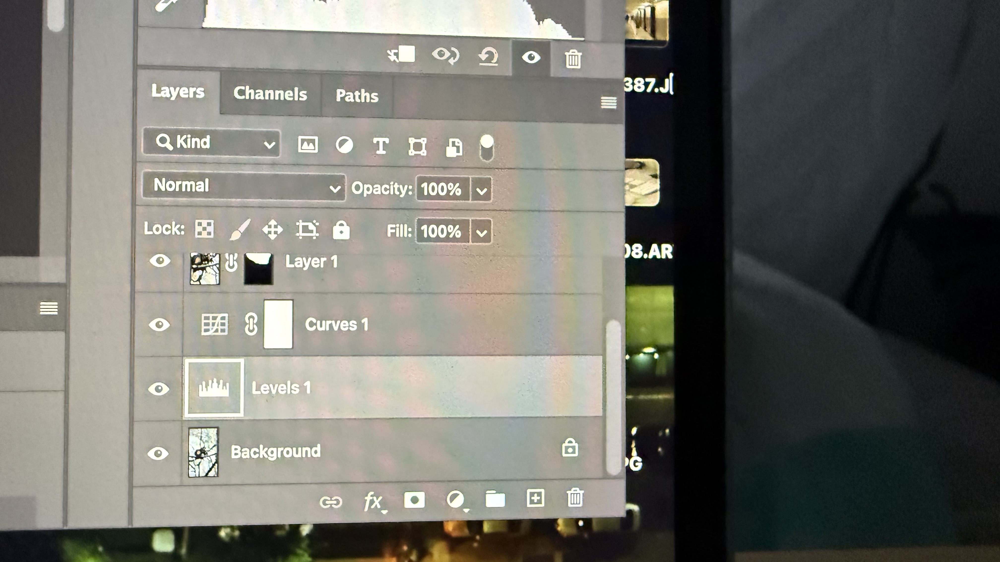
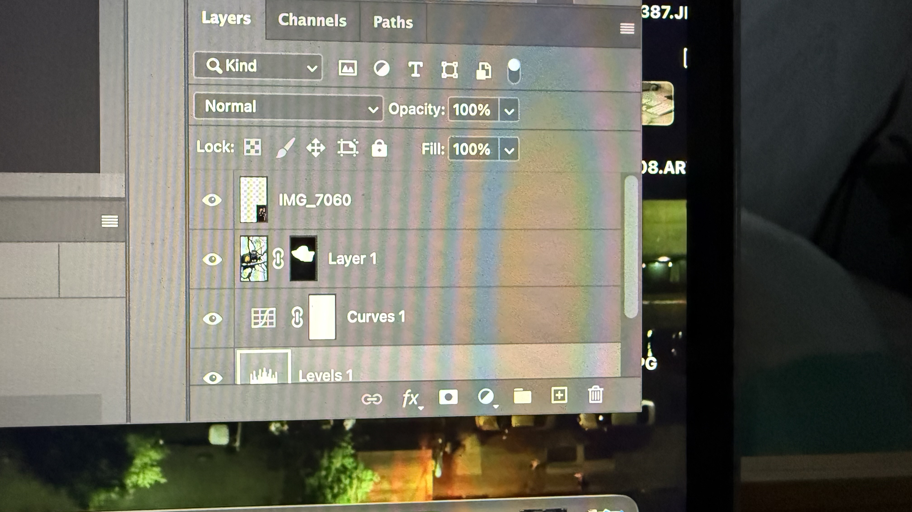

Social Campaign Photomontage
Final Photomontage

Photoshop Layers Screenshot


Concept
For this photomontage I explored the ecological issue of rainforest destruction and the disappearance of wildlife. I used a photo I took at the zoo of a monkey sitting on tree branches. Seeing this animal made me think about how many species today survive only in zoos because their natural habitats are disappearing. When forests are cut down, animals lose their homes and entire ecosystems collapse. I also included a photo of a quote I saw in the zoo: “Once a rain forest is cut down, its wildlife is gone forever.” This message became the central idea of my composition.
Techniques
In Photoshop I combined several photographs that I took myself. I used layer masks to isolate parts of the images and blend them together. Masking allowed me to merge different elements into one composition instead of keeping them as separate photos. I also adjusted the scale and placement of the images to create stronger visual focus on the monkey. The composition explores contrast between the animal and the disappearing environment. All images used in this montage are my original photographs taken in the zoo.